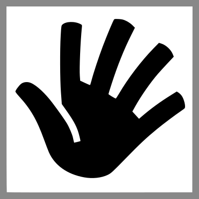
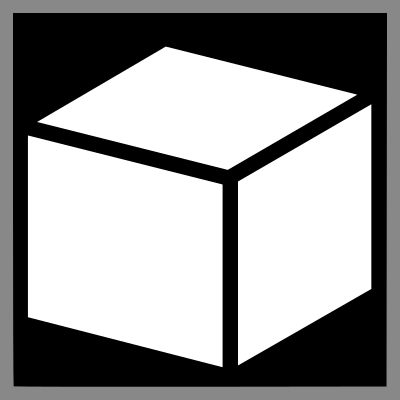
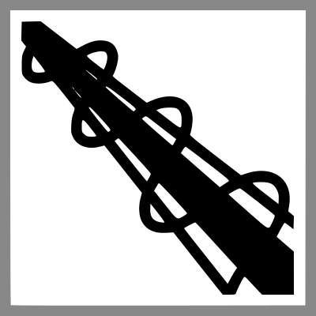
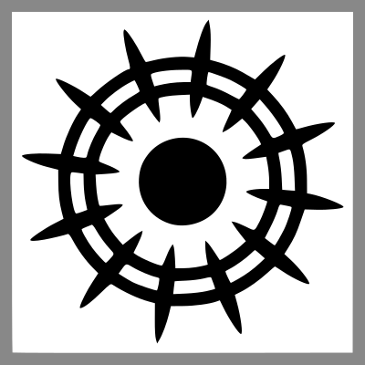

Einleitung
Aera der Zauberey (AdZ) ist ein Fantasy-Rollenspiel, das einen besonderen Schwerpunkt auf flexible und dennoch spielbare Regeln legt. Dies gilt - nomen est omen - insbesondere für den Bereich der Magie. Obwohl in den meisten Spielwelten nur ein kleiner Teil der Bevölkerung Magie wirken kann und auch nicht jedes Abenteuer, das die Charaktere erleben, sich um Magie drehen wird, spielt sie immer eine wichtige Rolle - und sei es nur, weil die Charaktere häufig auf sie zurückgreifen, um die ihnen gestellten Aufgaben zu lösen.
Flexibles Magiesystem
Die in diesem Regelwerk enthaltenen Magieregeln integrieren die enormen, eben übernatürlichen Möglichkeiten, welche die Magie bietet, ins Rollenspiel.
Statt in konkreten Zaubersprüchen werden die magischen Fähigkeiten eines Charakters in sehr allgemeinen Fertigkeiten wie Lebewesen oder Telekinese ausgedrückt, welche auch untereinander kombiniert werden können. Außerdem kann jeder Spieler, dessen Charakter grundsätzlich in den relevanten Bereichen der Magie bewandert ist, aus heiterem Himmel eine Idee für einen bestimmten magischen Effekt ins Spiel einbringen. Der Spielleiter gibt dann eine Würfelregelung vor, die nicht nur Auskunft gibt über Erfolg oder Misserfolg des Zauberns, sondern auch über die konkreten Auswirkungen auf die Umwelt (z.B. Höhe, Breite, Dauer, Schnelligkeit etc.).
Die Macht von Zauberkundigen wird dabei zwar von einigen Faktoren begrenzt. Dennoch ist es nicht das Ziel von AdZ, in irgend einer Weise eine Balance zwischen magiekundigen Charakteren und solchen, die keine Magie wirken können, herzustellen. Ein solcher Versuch würde entweder Magiekundige auf wenig plausible Weise einschränken oder andere Charaktere unrealistisch stark machen.
Spielbarkeit
AdZ soll ein schnell spielbares System mit leicht zu merkenden Regeln sein, welche dem Erzählen nicht „im Weg stehen”. Es enthält daher weit weniger Regeln als andere Systeme und geht davon aus, dass der Spielleiter viele Entscheidungen besser mit Einsatz von gesundem Menschenverstand als mit dem Konsultieren eines umfangreichen Katalogs aus genauen Regeln und Tabellen fällen kann.
Dadurch eignet sich AdZ nicht unbedingt für Spieler mit wenig Rollenspielerfahrung oder für Spielleiter, die bisher hauptsächlich vorgefertigte Kaufabenteuer geleitet haben. Es wird insbesondere Rollenspielern ans Herz gelegt, die ein Faible für Magie und erzählerisches Rollenspiel haben und die klassischen Spielsysteme als zu einschränkend empfinden.
Charaktere und ihre Werte
Eigenschaften
Charaktere werden durch drei Typen von Eigenschaften beschrieben: Attribute, Fertigkeiten und Spezialisierungen.
Ein Charakter besitzt in jeder seiner Eigenschaften eine bestimmte Anzahl Punkte: bei Attributen und Fertigkeiten bis zu 10, bei Spezialisierungen bis zu 5 Punkte. Bei Proben steht ihm eine Anzahl Würfel in Höhe der Punkte der jeweils eingesetzen Eigenschaft(en) zur Verfügung (siehe ).
Attribute
Die grundlegenden Eigenschaften eines Charakters schlagen sich in zwölf Attributen nieder, von denen drei Magiebegabten vorbehalten sind.
| Attribut | Abk. | Bedeutung | |
|---|---|---|---|
| Körperkraft | KK | Physische Kraft, Ausdauer | |
| Gewandtheit | GE | Beweglichkeit, Schnelligkeit, Balance, Eleganz der Bewegungen. Wichtig im Nahkampf. | |
|  | Fingerfertigkeit | FF | Geschickter Einsatz der Hände, feinmotorische Fähigkeiten, Hand-Augen-Koordination |
| Konstitution | KO | Robustheit, Verminderung von erhaltenem Schaden, geringere Anfälligkeit für Krankheiten | |
| Erscheinungsbild | EB | Maß für körperliche Attraktivität | |
| Charisma | CH | Wirkung auf andere, Ausstrahlung, Präsenz | |
| Willenskraft | WK | Entschlossenheit, Konzentration, Ertragen von Schmerzen. Wichtig für Magie. | |
| Klugheit | KL | Analytisches Denken, Strukturierungsfähigkeit, Lern- und Merkfähigkeit | |
| Intuition | IN | Instinktives Erfassen, schnelles Entscheiden, Feingefühl, Aufmerksamkeit, Initiative im Kampf | |
|  | Materie | MA | Magische Beeinflussung von Materie (siehe Magiefertigkeiten) |
|  | Energie | EN | Magische Beeinflussung von Energie (siehe Magiefertigkeiten) |
|  | Sphäre | SP | Magische Beeinflussung nicht-physischer Muster (siehe Magiefertigkeiten) |
Fertigkeiten
Fertigkeiten repräsentieren die individuellen Kenntnisse und Fähigkeiten eines Charakters auf dem jeweiligen Gebiet. Für Proben werden Fertigkeiten mit einem zur jeweiligen Situation passenden Attribut kombiniert. Zur Orientierung sind in den unten stehenden Tabellen auch Attribute angegeben, mit denen die jeweilige Fertigkeit häufig kombiniert wird.
| Fertigkeit | Attribut | Kurzbeschreibung |
|---|---|---|
| Allgemeinbildung [Region, Stadt/Land] | KL | Das in einer Bevölkerungsschicht übliche Wissen, z.B. „Allgemeinbildung (Mitteleuropa, Stadt)”. |
| Heimlichkeit | GE | Schleichen, sich verstecken, unauffällig Personen verfolgen |
| Klettern | KK | Mit oder ohne Ausrüstung Hindernisse erklimmen |
| Körperbeherrschung | GE | Balancieren, Springen, Abrollen |
| Manipulation | CH | Lügen, Überzeugen, Überreden, Verhandeln, Einschüchtern |
| Menschenkenntnis | IN | Menschen einschätzen, Lügen erkennen |
| Pflanzenkunde | KL | Wissen über Verbreitung und Wirkung von Pflanzen sowie einfache Verarbeitung zu bspw. Tee, Pasten |
| Schwimmen | GE | Alles, was über bloßes „über Wasser halten” hinausgeht: Tauchen, Ausweichen; auch Maß für Schnelligkeit |
| Tierkunde | KL | Erkennen verschiedener Tierarten, Wissen um deren Verhalten und Verbreitung |
| Wahrnehmung | IN | Genauigkeit sämtlicher Sinneswahrnehmungen; Aufmerksamkeit |
| Wildnisleben | KL | Orientierung, Lagerplatz wählen, Wasser oder essbare Pflanzen finden |
| Fertigkeit | Attribut | Kurzbeschreibung |
|---|---|---|
| Chirurgie | FF | Wundversorgung, Invasive Behandlung von Skelett und Organen, Traumatologie, Foltern, Zahnheilkunde |
| Gaukelei | FF / GE | Unterhaltung eines Publikums insb. durch Bauchreden, Entfesselung, Jonglage, Puppenspiel, Taschenspielerei; umfasst auch Falschspiel und Taschendiebstahl |
| Jagdwesen | GE | Fallenstellen, Einzeljagd, Durchführen von Gesellschaftsjagden, Aufzucht und Einsatz von Greifvögeln für Jagdzwecke |
| Kochkunst | IN | Herstellung verschiedener Lebensmittel durch Kochen, Bäckerei und Konditorei, Molkerei, Brauerei, Brennerei |
| Kriegskunst | KL | Taktik und Strategie, Truppen kommandieren und motivieren |
| Magiekunde | KL | Allgemeinbildung auf magischem Gebiet (Gesten, Gruppierungen, ...) |
| Medizin | KL | Diagnose und Therapie von Krankheiten, Krankenpflege, Herstellung von Arzneien, Geburtshilfe, Allgemein- und Fachmedizin |
| Musik | IN | Verschiedene Musikinstrumente, Musikalische Improvisation, Kompositionslehre, Musikgeschichte, Gesang, Spezielle Gesangstechniken, Chor- und Orchesterleitung, Tontechnik, Akustik |
| Reitkunst | GE | Beherrschen von Reittieren, Führen und Warten von Fuhrwerken, aber auch das Führen von Nahkampf- und Fernkampfwaffen während des Reitens sowie Lanzenreiten. |
| Schauspielerei | CH | Bühnenschauspiel, Vortrag von Lyrik und Märchen |
| Fertigkeit | Attribut | Kurzbeschreibung |
|---|---|---|
| Lebewesen | MA | Veränderungen aller Art an beliebigen Lebewesen |
| Luft | MA | Eigenschaften von Luft verändern, Barrieren erschaffen, Schall beeinflussen |
| Tote Materie | MA | Ehemals lebendiges Material beeinflussen |
| Unbelebte Materie | MA | Anorganische Stoffe beeinflussen |
| Energiemanipulation | EN | Erzeugen und Beeinflussen von Wärme, Licht und Elektrizität |
| Kraftmanipulation | EN | Antimagie, gemeinsames Zaubern |
| Spüren | EN | Magische Sinneseindrücke empfangen sowie Zauber und Auren analysieren |
| Telekinese | EN | Objekte und Personen bewegen, Bewegung unterbinden |
| Artefaktmagie | SP | Speichern von Zaubern in Objekten |
| Geistmanipulation | SP | Emotionen, Wahrnehmung, Gedanken und Erinnerungen manipulieren |
| Telepathie | SP | Mentale Kommunikation mit anderen Personen und Tieren |
| Teleportation | SP | Personen und Objekte teleportieren, Tore zu anderen Orten öffnen |
| Zeitmanipulation | SP | Zeit beschleunigen und verlangsamen, Zeitreisen |
Details zur Abgrenzung der einzelnen Fertigkeiten voneinander sowie Richtlinien zu ihrer Handhabung im Spiel finden sich im Anhang .
Spezialisierungen
Die oben aufgeführten Fertigkeiten sind bewusst grob gehalten, um mit einer überschaubaren Anzahl von Spielwerten einen sinnvollen Bereich von Fähigkeiten ausdrücken zu können. Eine wirklich adäquate Ausdifferenzierung ist damit jedoch oft nicht möglich.
Diese Lücke wird durch Spezialisierungen gefüllt. Bei der Charaktererschaffung einigen sich Spieler und Spielleiter auf einen Satz von Spezialisierungen, welche die Fähigkeiten des Charakters präzisieren. In diesem Regelwerk gibt es keine Liste von möglichen Spezialisierungen; Hinweise dazu liefern jedoch meist die Beschreibungen der jeweiligen Fertigkeiten. Eine Spezialisierung sollte einen deutlich geringeren Umfang als die zugehörige Fertigkeit haben, maximal etwa 30%.
Jede Spezialisierung ist dabei einer Fertigkeit zugeordnet, die der Charakter jedoch nicht besitzen muss.
Charaktererschaffung
Um einen Charakter zu erstellen, kauft der Spieler Attribute, Fertigkeiten, Spezialisierungen und gegebenenfalls Sonderfertigkeiten. Zum Abschluss bestimmt er noch verschiedene Kampfwerte.
Attribute, Fertigkeiten und Spezialisierungen
Für die Charaktererschaffung steht dem Spieler eine gewisse Anzahl von Erfahrungspunkten (EP) zur Verfügung, welche die Vorgeschichte und Ausbildung des Charakters symbolisieren. Der Spieler kann mit diesen Erfahrungspunkten Attribute, Fertigkeiten und Spezialisierungen kaufen.
Der Spielleiter kann für seine Spielrunde die EP-Anzahl frei wählen. Für wenig erfahrene Charaktere bzw. für Spieler, welche zum ersten Mal AdZ spielen, werden 900 EP empfohlen.
Beim Kaufen von Attributen und Fertigkeiten gelten die folgenden Regeln:
- Mit Ausnahme von Materie, Energie und Sphäre muss für jedes Attribut mindestens ein Punkt gekauft werden.
- Es können pro Attribut oder Fertigkeit höchstens 8 Punkte gekauft werden, für Spezialisierungen gilt keine Beschränkung bei der Charaktererschaffung.
- Das Attribut Erscheinungsbild sollte im Spiel nicht regulär gesteigert werden können. Daher kann der Spielleiter, wenn es sinnvoll und für das Charakterkonzept wichtig ist, für dieses Attribut auch den Kauf von mehr als 8 Punkten zulassen.
Die Kosten sind der folgenden Tabelle zu entnehmen. Beachten Sie, dass eventuell übrige EP nicht verfallen, sondern später im Spiel zum Steigern verwendet werden können. Die Kosten bleiben dieselben.
| Punkte | Erfahrungspunktkosten | ||
|---|---|---|---|
| Attribut | Fertigkeit | Spezialisierung | |
| 1 | 10 | 4 | 2 |
| 2 | 15 | 6 | 3 |
| 3 | 25 | 10 | 5 |
| 4 | 40 | 16 | 8 |
| 5 | 60 | 24 | 12 |
| 6 | 85 | 34 | - |
| 7 | 115 | 46 | - |
| 8 | 150 | 60 | - |
| 9 | 190 | 76 | - |
| 10 | 235 | 94 | - |
Dabei entsprechen 4 bis 5 Punkte dem Bevölkerungsdurchschnitt bei Attributen bzw. einer soliden Ausbildung in einer Fertigkeit. Darüber hinaus können sich Spieler beim Kauf der Eigenschaften an den folgenden Richtwerten für Würfelanzahlen, also der Summe aus jeweils einem passenden Attribut, Fertigkeit und Spezialisierung, orientieren (mehr zu Würfelanzahlen unter ):
| Würfel | Bewertung |
|---|---|
| 1 | Lächerlich |
| 4 | Einsteiger |
| 8 | Durchschnittlich |
| 12 | Fortgeschritten |
| 16 | Erfahren |
| 20 | Meisterlich |
| 25 | Legende |
Sonderfertigkeiten
Neben Attributen und Fertigkeiten können Spieler noch weitere Eigenschaften für einen Charakter kaufen, die Sonderfertigkeiten. Für Sonderfertigkeiten wird keine Punktzahl notiert; entweder ein Charakter besitzt die entsprechende Sonderfertigkeit oder er besitzt sie nicht.
Charakteren stehen die folgenden Sonderfertigkeiten zur Verfügung:
- Gestenlos zaubern (15 EP)
-
Der Charakter hat gelernt, ohne Zuhilfenahme von Gesten zu zaubern. Kann einzeln oder zusammen mit Wortlos zaubern gekauft werden.
- Wortlos zaubern (15 EP)
-
Diese Sonderfertigkeit ermöglicht es, Magie völlig ohne gemurmelte oder gesprochene Zauberformeln zu wirken. Kann einzeln oder zusammen mit Gestenlos zaubern gekauft werden.
Alle Sonderfertigkeiten können nicht nur während der Charaktererschaffung, sondern auch später gekauft werden.
Kampfwerte
Die folgenden im Kampf benötigten Werte werden auf dem Charakterblatt eingetragen. Details zur Bedeutung dieser Werte finden sich unter .
- Initiativebasiswert
- Für den Initiativewurf im Kampf besitzt jeder Charakter einen Initiativebasiswert. Dieser errechnet sich aus dem Attribut Intuition und der Fertigkeit Reflexe: (Intuition + Reflexe) * 2.
- Rüstung
- Trägt der Charakter eine Rüstung, werden die passenden Angaben zu Rüstungsschutz (RS), Widerstandsbonus (WB) und Angriffsmalus (AM) aus der Rüstungstabelle in die jeweiligen Felder übernommen.
- Schild / Parierwaffe
- Falls verwendet, werden für Schilde und/oder Parierwaffen der Verteidigungsmodifikator (VM) und Angriffsmalus (AM) aufsummiert und auf dem Charakterblatt eingetragen. Die Werte finden sich unter .
Des weiteren werden für jede vom Charakter beherrschte Waffengattung oder Kampftechnik jeweils die folgenden Werte notiert. Die benötigten Angaben finden sich in der Waffentabelle im folgenden Format:
| Schadenscode | Maximalschaden | Verteidigungsmodifikator | |
|---|---|---|---|
| Speer | 4 + (KK-5) | 7 | -1 |
- Attribut
- Der Angriffswurf wird mit dem Attribut durchgeführt, welches im Schadenscode verwendet wird. So wird z.B. ein Speer mit Körperkraft geführt.
- Der Schadenscode gibt außerdem an, wie hoch dieses Attribut mindestens sein muss, um die Waffe führen bzw. die Kampftechnik nutzen zu können: dazu muss der geklammerte Ausdruck mindestens 0 ergeben. Die KK-Vorraussetzung beträgt im Beispiel oben also 5.
- Grundschaden
- Der Grundschaden einer Waffe bzw. Kampftechnik ergibt sich aus dem in der angegebenen Schadenscode und dem Maximalschaden. Für einen Charakter mit Körperkraft 7 ergibt sich im Beispiel ein Grundschaden von 6. Liegt der so ermittelte Wert über dem angegebenen Maximalschaden, wird letzterer als Grundschaden eingetragen.
- Verteidigungsmodifikator
- Der Verteidigungsmodifikator einer Waffe wird in der Spalte „Sonstiges” eingetragen, z.B. „VM -1”.
- Reichweitenklasse
- Für Fernkampfwaffen werden die Distanzangaben der jeweils angegebenen Reichweitenklasse unter „Sonstiges” notiert, z.B. für Klasse B: „6/12/25/50”.
Steigerung von Eigenschaften
Im Laufe seiner Abenteurerkarriere kann ein Charakter seine Fähigkeiten verbessern - er wird z.B. stärker, geschickter oder erfahrener im Umgang mit Magie. Dazu vergibt der Spielleiter für die im Spiel gemachten Erfahrungen regelmäßig weitere Erfahrungspunkte (EP). Die Anzahl der EP sollte sich aus einem Basiswert für das Erreichen des gesetzten Ziels und zusätzlichen Punkten für gute Zusammenarbeit, überraschende Einfälle oder gutes Ausspielen der eigenen Rolle zusammensetzen.
Es ist unmöglich, genaue Regeln für die Höhe der vergebenen EP festzulegen. Zum einen ist diese stark davon abhängig, wieviel Zeit in der Spielwelt vergangen ist und ob das Abenteuer eher aus alltäglichen oder weltbewegenden Geschehnissen bestand - zum anderen ist es auch schlicht Geschmackssache, wie schnell eine Gruppe erfahrener werden soll. Dennoch sei an dieser Stelle als Orientierung angegeben, dass ein Spielabend von vier bis fünf Stunden Dauer mit durchschnittlichem Inhalt etwa 12 EP wert sein sollte.
Ein Spieler kann diese EP verwenden, um einzelne Eigenschaften seines Charakters zu steigern. Die EP-Kosten dafür sind umso höher, je mehr Punkte der Charakter in dieser Eigenschaft bereits besitzt: es kostet z.B. 6 EP, eine Fertigkeit von 3 auf 4 zu steigern.
| Attribut | Fertigkeit | Spezialisierung | |
|---|---|---|---|
| Erster Punkt | 10 | 4 | 2 |
| Punktzahl um 1 steigern | Bisherige Punkte * 5 | Bisherige Punkte * 2 | Bisherige Punkte |
Außerdem kann ein Charakter auch nachträglich die im Kapitel beschriebenen Sonderfertigkeiten kaufen.
Bei Steigerungen sollten Spieler und Spielleiter auch die erzählerische Erklärbarkeit berücksichtigen. So kann sich ein Spieler nach einem Wüstenabenteuer sicherlich entscheiden, dass der Charakter seine Geographie-Fertigkeit verbessert hat - die Steigerung von Schwimmen dürfte jedoch etwas abwegig sein.
Zu dieser Erklärbarkeit gehört auch, dass man gerade bei neuen Fertigkeiten und beim Erlernen von Sonderfertigkeiten einen Lehrmeister oder entsprechende Fachliteratur zur Verfügung haben sollte. Wer den Schwertkampf in Grundzügen beherrscht, kann vielleicht durch reine Übung und Training besser werden - der Versuch, sich das Kämpfen mit dem Schwert selbst beizubringen wäre jedoch von vornherein zum Scheitern verurteilt.
Beachten Sie, dass nach einer Steigerung ggf. der Initativebasiswert und der Waffengrundschaden neu bestimmt werden müssen (siehe ).
Proben
Alltägliche Handlungen wie Gehen, Sprechen oder Essen werden einem Charakter immer gelingen. Wenn es jedoch fraglich ist, ob eine Aktion gelingt, kann der Spielleiter eine Probe auf die Eigenschaften des Charakters verlangen.
Überblick
Eine Probe wird durch das Rollen mehrerer sechsseitiger Würfel (kurz: W6) durchgeführt, wobei die Würfelanzahl von den Eigenschaften des Charakters abhängt. Das Ergebnis des Würfelwurfs wird als Anzahl von Erfolgen angegeben. Damit die Probe gelingt, muss der Spieler eine vom Spielleiter bestimmte Anzahl von Erfolgen, den Mindestwurf, erreichen.
Probenart und Würfelanzahl
Es gibt zwei Arten von Proben: Fertigkeitsproben und Attributsproben. Spezialisierungen können bei beiden Probenarten eingesetzt werden.
Fertigkeitsproben
Die Würfelanzahl entspricht der Summe der Punktzahlen von Attribut, Fertigkeit und ggf. einer passenden Spezialisierung. Besitzt der Spieler die passende Fertigkeit nicht, führt er die Probe mit den verbleibenden Würfeln durch. Alternativ darf er nach Spielleiterentscheid auch eine verwandte Fertigkeit einsetzen.
Das zu verwendende Attribut wird vom Spielleiter der Situation entsprechend ausgewählt.
Beispiele:
- Beruhigen eines Pferds mit Reitkunst + Charisma (statt Gewandtheit)
- Schienen des eigenen gebrochenen Arms mit Medizin + Willenskraft (statt Klugheit)
- Herstellung von Nitroglyzerin mit Chemie + Fingerfertigkeit (statt Klugheit)
Attributsproben
Die Würfelanzahl entspricht der Summe der Punktzahlen von Attribut und ggf. einer zur Aufgabe passenden Spezialisierung.
Attributsproben werden nur dann eingesetzt, wenn der Spielleiter keine der Fertigkeiten dieses Regelwerks für passend hält, nicht etwa weil der Charakter die passende Fertigkeit nicht besitzt.
Umstandsmodifikatoren
Neben den Fähigkeiten eines Charakters gibt es häufig weitere Umstände, welche die Probe beeinflussen. Für negative Einflüsse wie Verletzungen oder Erschöpfung (siehe ), besondere Eile oder widrige Bedingungen (z.B. eisige Kälte) kann der Spielleiter einen Würfelmalus bestimmen. Umgekehrt können positive Einflüsse wie gute Vorbereitung, ausführliches Zielen oder Hilfe von anderen einen Würfelbonus bewirken. Dabei werden alle anwendbaren Würfelmali und -boni auf die zuvor bestimmte Würfelanzahl angerechnet.
Mindestwurf
Als nächstes legt der Spielleiter den zu erreichenden Mindestwurf fest. Dieser hängt von der Schwierigkeit der Aufgabe und den Begleitumständen ab. Für einige Arten von Aufgaben wie das Zaubern sind in diesem Regelwerk Richtlinien für Mindestwürfe aufgeführt; als generelle Orientierung kann die folgende Tabelle verwendet werden:
| Art der Aufgabe | Mindestwurf | |
|---|---|---|
| Fertigkeitsprobe | Attributsprobe | |
| Leicht | 1 | 1 |
| Mittel | 2 | 2 |
| Herausforderung | 3 | |
| Schwierig | 4 | 3 |
| Extrem schwierig | 5 | |
| Fast unmöglich | 6+ | 4+ |
Für die Verwendung einer verwandten Fertigkeit statt der passenden erhöht sich der Mindestwurf nach Spielleiterentscheid um mindestens 1 Erfolg, je nach Verwandtschaft der Fertigkeiten bzw. Eignung für die aktuelle Aufgabe.
Die Frage nach dem letzten bekannten Auftauchen des Necronomicons kann mit der Fertigkeit Allgemeinbildung nur sehr schwer beantwortet werden, für Charaktere mit der Fertigkeit Okkultismus jedoch bedeutend einfacher.
Erfolge
Das Ergebnis einer Probe wird als Anzahl von Erfolgen angegeben. Jeder gerollte Würfel, der eine 5 oder 6 zeigt, zählt als ein Erfolg.
Ist die Anzahl der Erfolge gleich oder höher als der zuvor festgelegte Mindestwurf, ist die Probe gelungen. Wurden weniger oder gar keine Erfolge erzielt, ist die Aktion gescheitert.
Elris, seines Zeichens zukünftiger Meisterdieb, ist in den frühen Morgenstunden im Haus eines reichen Bürgers bei der Arbeit. Da man sich in Elris' Gewerbe jedoch möglichst lautlos bewegen sollte, verlangt der Spielleiter von Elris eine Heimlichkeits-Probe. Und weil ja ausnahmslos alle Holzdielen die Angewohnheit haben, in den unpassendsten Momenten zu knarren und zu quietschen, ist diese Probe gar nicht so leicht: der Spielleiter sagt einen Mindestwurf von 3 an.
Elris hat Gewandtheit 5, Heimlichkeit 2 und die Spezialisierung „Schleichen” auf 3, macht 10. Er rollt seine 10 Würfel, sie zeigen: 5, 2, 4, 1, 6, 2, 2, 6, 3, 4, ergibt insgesamt drei Erfolge - Elris schafft es also, kaum verräterische Geräusche zu verursachen. Hätte er weniger als drei Erfolge gehabt, wäre er direkt und lautstark auf eine knarrende Diele getreten.
Es kann vorkommen, dass ein Mindestwurf höher ist als die Würfelanzahl des Charakters und somit niemals genug Erfolge zusammenkommen können. Dies bedeutet schlicht und einfach, dass der Charakter der Aufgabe nicht gewachsen ist.
Es steht dem Spielleiter jedoch frei, auch in einem solchen Fall eine Probe zuzulassen. Erzielt der Charakter dann mit jedem einzelnen seiner Würfel einen Erfolg, hat er die Aufgabe durch pures Glück oder eine unerwartete Wendung der Geschehnisse bewältigen können.
Unterstützende Fertigkeiten
Häufig haben Charaktere mehrere Fertigkeiten, die in einer bestimmten Situation hilfreich sind. Obwohl eine Fertigkeitsprobe nur mit einer einzelnen Fertigkeit durchgeführt werden kann, ist es möglich eine zusätzliche Fertigkeit als Unterstützung zu verwenden. Wenn der Spielleiter diese zusätzliche Fertigkeit für die konkrete Aufgabe als passend erachtet, erhält der Charakter Bonuswürfel für die Fertigkeitsprobe. Die Anzahl der Bonuswürfel beträgt ein Drittel der Punkte der unterstützenden Fertigkeit (aufgerundet).
Beispiele:
- Medizinprobe unterstützt durch Magiefertigkeit Lebewesen
- Telekineseprobe zum Öffnen eines Schlosses unterstützt durch Fertigkeit Feinmechanik
- Manipulationsprobe zum Überreden unterstützt durch Menschenkenntnis
Vergleichende Proben
Oftmals treten zwei Charaktere gegeneinander an, z.B. in einem sportlichen Wettkampf oder auch beim Erkennen von Lügen. In solchen Situationen führen beide Charaktere jeweils eine Probe auf die passende Fertigkeit (dies kann für beide dieselbe Fertigkeit sein) durch; wurde kein anderer Mindestwurf festgelegt, beträgt er jeweils 1.
Umstände, welche einen der beiden Charaktere betreffen und die Probe beeinflussen, führen beim jeweiligen Charakter wie bei normalen Proben zu Würfelmali oder -boni.
Das Ergebnis wird wie folgt ermittelt:
- Gelingt nur eine der Proben, steht der Sieger des Vergleichs fest.
- Gelingen beide Proben, wird die Anzahl der Erfolge verglichen: Derjenige mit mehr Erfolgen hat „gewonnen”.Bei Zaubern zählt die Gesamtanzahl der Erfolge, unabhängig davon wieviele zum Mindestwurf gehören und wieviele „überzählige” Erfolge zu Bonuswürfeln bei der Widerstandsprobe führen.
- Sollte die Anzahl der Erfolge gleich sein, gewinnt derjenige, welcher die auslösende Handlung durchgeführt hat. Sind beide Handlungen gleichwertig (z.B. beim Armdrücken), gilt der Vergleich als unentschieden.
Der Hausherr, der gerade von einem Ball nach Hause kommt, betritt durch die Hintertür des Hauses die Küche. Die Tür zum Flur ist geschlossen und dämpft die von Elris verursachten Geräusche, also setzt der Spielleiter einen Würfelmalus von 2 an. Der Hausherr erzielt mit seinen verbliebenen 5 Wahrnehmungs-Würfeln immerhin 3 Erfolge. Elris, dessen Herumschleichen die auslösende Handlung für den Vergleich ist, hatte jedoch ebenfalls 3 Erfolge. Er gewinnt also den Vergleich und setzt seine Arbeit fort, während der Hausherr nichts ahnend schlafen geht.
Gesundheit
Der Gesundheitszustand eines Charakters setzt sich zusammen aus:
- Körperlichem Schaden
- Geistigem Schaden
Jeder Schaden, den ein Charakter erhält, ist entweder körperlicher oder geistiger Schaden. In beiden Fällen steht dem Charakter ein Widerstandswurf zu, der seine Zähigkeit und Widerstandsfähigkeit repräsentiert. Für jeden Erfolg bei diesem Wurf wird der Schaden um 1 reduziert.
Der tatsächlich erhaltene Schaden wird durch Ankreuzen der 12 Stufen der jeweiligen Schadensleiste auf dem Charakterblatt vermerkt. Nach und nach wird dieser Schaden dann abhängig von den Umständen und der im Spiel vergangenen Zeit wieder abgebaut.
| -0 | -1 | -1 | -2 | -2 | -3 | -3 | -4 | -4 | -5 | -6 | X |
Bei jeder Schadensstufe ist der sogenannte Verletzungsmalus angegeben. Für einen Charakter gilt jeweils der Malus, dessen Stufe zuletzt angekreuzt wurde. Die durch verschiedene Schadensarten verursachten Verletzungsmali sind dabei nicht kumulativ; es gilt nur der jeweils höchste Malus.
Der Verletzungsmalus verringert die Würfelanzahl bei allen Proben außer Widerstandswürfen (siehe oben).
In den folgenden Abschnitten werden die Regelmechanismen der beiden Schadensarten vorgestellt.
Körperlicher Schaden
Erleidet ein Charakter Schnitt- oder Stichwunden, Knochenbrüche, Zerrungen, Verbrennungen oder ähnliche Verletzungen, werden dafür Stufen seiner körperlichen Schadensleiste angekreuzt.
Der Widerstandswurf für körperlichen Schaden wird mit dem Attribut Konstitution durchgeführt.
Je mehr Schaden ein Charakter erhalten hat, desto schwächer wird er: die Verletzungen verursachen nicht nur Schmerzen, sondern schränken auch die Bewegungsfähigkeit ein. Dies wird durch den Verletzungsmalus dargestellt.
Wird die letzte körperliche Schadensstufe erreicht, verliert der Charakter das Bewusstsein und ist dem Tod nahe. Werden seine Wunden umgehend versorgt, kann er gerettet werden. Hat der Charakter aber über die letzte Stufe hinaus Schaden erhalten, kann ihn allenfalls der sofortige Einsatz von Heilungsmagie retten.
Im Zuge der natürlichen Heilung werden nach und nach die Schadensstufen wieder abgebaut, beginnend mit der letzten. Pro körperlicher Schadensstufe sind dafür im Normalfall ein bis drei Regenerationsphasen (ausreichender Nachtschlaf) anzusetzen, abhängig von der Art der Verletzungen (z.B. Blutergüsse, leichte/tiefe Schnittwunden oder Quetschungen).
Beachten Sie, dass die oben angegebene Faustregel nur als grobe Orientierung dienen kann und selbstverständlich für manche Fälle (z.B. Knochenbrüche) völlig ungeeignet ist. Hier gilt dann stattdessen die Einschätzung des Spielleiters.
Übrigens bezieht sich der Abbau von Schadensstufen eher auf das Nachlassen der negativen Auswirkungen von Verletzungen als auf den Abschluss der Heilung aus medizinischer Sicht. So ist z.B. eine Schnittwunde nach ihrer regeltechnischen Regeneration natürlich nicht vollständig verschwunden, sondern verursacht lediglich keine Schmerzen mehr.
Verhält sich der Charakter nicht seinen Verletzungen entsprechend, in dem er z.B. Wunden nicht reinigt und verbindet oder trotz schwerer Verletzungen Gewaltmärsche unternimmt, findet im günstigsten Fall keine Regeneration statt, während im ungünstigsten Fall Komplikationen wie Wundbrand, wieder aufplatzende Wunden oder andere Folgeschäden auftreten.
Geistiger Schaden
Nicht jeder Angriff hat körperlichen Schaden zur Folge. So verursacht eine simple (waffenlose) Prügelei im allgemeinen nur leichte Verletzungen — eben blaue Flecken oder harmlose Abschürfungen. Auch Zauberei kann beim Anwender solchen geistigen Schaden, zum Beispiel in Form von Müdigkeit oder Kopfschmerzen, verursachen. Dieser Schaden wird durch die geistige Schadensleiste dargestellt.
Der Widerstandswurf für geistigen Schaden wird mit dem Attribut Willenskraft durchgeführt.
Hat ein Charakter geistigen Schaden erhalten, wird er zunehmend unkonzentrierter und erschöpfter, bis zur völligen Bewusstlosigkeit auf der letzten geistigen Schadensstufe. Darüber hinaus gehender geistiger Schaden wird auf die körperliche Schadensleiste übertragen.
Die Summe des erhaltenen geistigen Schadens wird in leichten, mittleren und schweren Schaden eingeteilt, wobei jede Kategorie jeweils vier Schadenspunkte umfasst. In welcher Kategorie sich ein Charakter befindet, ist für die Regeneration wichtig.
Für geistigen Schaden gelten folgende Verletzungsmali:
| Leichter Schaden | Mittlerer Schaden | Schwerer Schaden | |||||||||
| -0 | -1 | -1 | -2 | -2 | -3 | -3 | -4 | -4 | -5 | -6 | X |
Geistiger Schaden heilt wesentlich schneller als körperlicher Schaden, solange der Charakter keine größeren Anstrengungen wie Kampf oder Zaubern unternimmt. Die Geschwindigkeit ist abhängig von der Schadenskategorie: Leichter Schaden reduziert sich etwa alle fünf Minuten um eins, mittlerer Schaden alle fünfzehn und schwerer Schaden alle 30 Minuten. Dabei wird die jeweils schwerste Schadensstufe zuerst geheilt.
Eine solche Regeneration „zwischendurch” ist jedoch nicht vollständig, im schlechtesten Fall bleiben die vordersten drei Schadensstufen übrig: Pro Schadenskategorie, die ein Charakter seit der letzten Regenerationsphase erreicht hat, kann eine Schadensstufe zunächst nicht regeneriert werden. Dies geschieht erst dann, wenn der Charakter das nächste Mal ausreichend lange schläft.
| Kategorie | Schadensstufen | Regenerationszeit | Übrige Stufen |
|---|---|---|---|
| Leicht | 1-4 | 5 Minuten | 1 |
| Mittel | 5-8 | 15 Minuten | 2 |
| Schwer | 9-12 | 30 Minuten | 3 |
Erhält ein Charakter z.B. morgens 4 geistige Schadenspunkte, kann er 3 davon innerhalb kürzester Zeit wieder regenerieren. Erhält er später nochmals 5 Schadenspunkte und erreicht mittleren Schaden, benötigen die Schadensstufen 6 und 5 jeweils eine Viertelstunde zur Regeneration. Anschließend regenerieren sich die Stufen 4 und 3 jeweils innerhalb von fünf Minuten — die restlichen zwei Stufen werden jedoch erst am nächsten Tag regeneriert sein.
Kampf
Überblick
In Kampfsituationen bedarf es zusätzlich zum erzählerischen Spiel einer stärkeren Strukturierung, um taktische Entscheidungen darzustellen. Diese Strukturierung wird in den folgenden Abschnitten erläutert.
Die Initiative gibt Auskunft darüber, in welcher Reihenfolge die Charaktere handeln. Zur Darstellung des zeitlichen Verlaufs eines Kampfes werden die Handlungen innerhalb von Kampfrunden abgewickelt. Im Abschnitt Nahkampf wird der Ablauf von Angriffen erklärt, bevor die Mechanismen für Rüstungen, Parierwaffen und Schilde vorgestellt werden. Die Regeln für den Beidhändigen Kampf sowie den Fernkampf schließen das Kapitel ab.
Initiative
In jedem Kampf gibt es einige Beteiligte, die einen Tick schneller reagieren und den Überblick über das Kampfgeschehen haben. Um diesen Umstand darzustellen, wird zu Beginn des Kampfes die Initiative ermittelt, um die Reihenfolge der einzelnen Kämpfer festzulegen.Bei längeren Kämpfen sollte der Spielleiter nach nennenswerten Veränderungen der Kampfsituation (z.B. Positionswechsel) die Initiativewürfe wiederholen lassen. Die Initiative ist die Summe aus folgenden Werten:
-
Boni oder Mali je nach Situation, z.B. Malus für überraschte Charaktere
-
Summe der Augenzahlen eines 2W6-Wurfs (dem Initiativewurf)
Haben mehrere Beteiligte die gleiche Initiative, wird ihre Reihenfolge untereinander ausgewürfelt.
Elris hat sich von seinem nächtlichen Einsatz ausgeruht. Der nächste Tag beginnt für ihn aber leider nicht so gut, wie der letzte endete: am Nachmittag steht er mit seiner Freundin Solinara zwei finster aussehenden und noch dazu feindlich gesinnten Gestalten gegenüber, die wortlos ihre Waffen ziehen.
Elris hat Intuition 5 und Reflexe 6, der Initiativebasiswert beträgt somit 22. Sein Initiativewurf ergibt eine 6, macht 28. Solinara hat Intuition und Reflexe jeweils auf 5 und würfelt eine 5, ergibt 25.
Der erste Gegner besitzt einen Initiativebasiswert von 18 und würfelt eine 4, ergibt 22. Der zweite hat einen Initiativebasiswert von 16 und würfelt eine 10, ergibt 26.
Elris hat also Glück: er ist mit 28 der schnellste. Nach ihm sind Gegner 2 bei 26, Solinara bei 25 und Gegner 1 bei 22 an der Reihe.
Kampfrunde
Während eines Kampfes werden alle Aktionen in Runden abgewickelt. Eine Kampfrunde entspricht dabei etwa drei Sekunden der gespielten Zeit.
Jede Kampfrunde ist in Aktionsphasen eingeteilt, eine für jeden Charakter. Die Reihenfolge der Aktionsphasen entspricht der absteigenden Reihenfolge der Initiative.
Während seiner Aktionsphase kann ein Charakter genau eine Handlung durchführen, die sogenannte Aktion. Des weiteren kann er beliebig viele Reaktionen während der Aktionsphasen anderer Charaktere durchführen. Diese Reaktionen können sowohl vor als auch nach seiner eigenen Aktionsphase stattfinden, jedoch ausschließlich als Folge auf eine Aktion eines anderen Charakters. So können z.B. Angriffe nicht als Reaktion betrachtet werden.
Die folgende Tabelle enthält Beispiele für Handlungen:
| Handlung | Typ |
|---|---|
| Angriff | Aktion |
| Zauber (offensiv/schützend/verstärkend) | Aktion |
| Nach Sturz wieder aufstehen | Aktion (ohne Probe) |
| Waffe wechseln/ziehen | Aktion (ohne Probe) |
| Ausweichen | Reaktion |
| Parade | Reaktion |
| Zauber (abwehrend) | Reaktion |
Die Hektik einer Kampfsituation schlägt sich auch in den Proben während eines Kampfes nieder. Jedes Mal, wenn ein Charakter eine Reaktion durchführt, halbiert sich sich seine Würfelanzahl für die nächste Reaktion: für die zweite Reaktion hat er nur noch die Hälfte, für die dritte nur noch ein Viertel, für die Vierte nur noch ein Achtel usw. der jeweiligen Würfelanzahl zur Verfügung. Dabei wird jeweils aufgerundet, so dass immer mindestens ein Würfel verbleibt. Erst zu Beginn der nächsten Runde kann er wieder alle Würfel einsetzen.
Die Würfelanzahl für seine Aktion bleibt hiervon unbeeinflusst.
Nahkampf
Für Nahkampfangriffe wird zunächst ein Angriffswurf durchgeführt, um zu ermitteln ob und wie gut der Angreifer den Verteidiger trifft. Dieser kann als Reaktion einen Verteidigungswurf durchführen, um Erfolge des Angriffswurfs auszugleichen. Der von der Waffe verursachte Schaden wird durch die übrigen Angriffserfolge erhöht und durch die Rüstung des Verteidigers gesenkt. Abschließend wird noch die Widerstandsfähigkeit des Verteidigers mit einem Widerstandswurf berücksichtigt.
- Angriffswurf
-
Für den Angriffswurf wird die Fertigkeit des Waffentyps bzw. der Kampftechnik mit dem Attribut kombiniert, das im Schadenscode aufgeführt ist (siehe ). Die Würfelanzahl wird um den Angriffsmalus der getragenen Ausrüstung verringert (siehe ).
Der Mindestwurf beträgt für einen normalen Angriff 1; für besondere Manöver gilt nach SL-Entscheid ein höherer Mindestwurf.Der Verteidigungswurf muss auch in diesem Fall alle Erfolge negieren - besonders schwierige Manöver sind auch schwierig abzuwehren.
- Verteidigungswurf
-
Der Verteidiger führt nun den Verteidigungswurf mit der Fertigkeit Verteidigung durch. Dabei können die Spezialisierungen Ausweichen, Parade oder Schildblock eingesetzt werden. Auf die Würfelanzahl werden die Verteidigungsmodifikatoren der von ihm geführten Waffen, Parierwaffen und Schilde angerechnet (siehe ).
Für jeden Erfolg beim Verteidigungswurf wird ein Erfolg des Angriffswurfs ausgeglichen. Bleibt kein Angriffserfolg übrig, wurde der Angriff vollständig abgewehrt. Falls mindestens ein Angriffserfolg bestehen bleibt, wurde der Verteidiger getroffen.
- Schadensermittlung
-
Jeder Angriff verursacht eine bestimmte Menge an Grundschaden, die vorab auf dem Charakterblatt notiert wurde (siehe ). Darüber hinaus richtet ein Angriff Bonusschaden in Höhe der übrigen Angriffserfolge an.
Trägt der Verteidiger eine Rüstung, wird der Schaden für jeden Punkt Rüstungsschutz um 1 gesenkt (siehe ).
Der Schaden, den eine Waffe nach Abzug des Rüstungsschutzes anrichten kann, ist auf den doppelten Grundschaden begrenzt.
- Widerstandswurf
-
Schließlich führt der Verteidiger einen Widerstandswurf durch: für körperlichen Schaden mit Konstitution, für geistigen Schaden mit Willenskraft. Die Würfelanzahl wird gegebenenfalls noch durch den Widerstandsbonus seiner Rüstung erhöht.
Für jeden Erfolg bei diesem Wurf wird der Schaden um 1 reduziert.
- Auswirkungen
-
Der übrige Schaden wird auf dem Charakterblatt vermerkt und führt fortan zu einem Verletzungsmalus (siehe ).
Während seiner Aktionsphase greift Elris Gegner 2 mit 9 Würfeln (Körperkraft 5, Schwerter 4) an und erzielt 3 Erfolge.
Elris’ Gegner versucht jetzt mit 9 Würfeln (Gewandtheit 4, Verteidigung 3, Parade 2) zu parieren. Er erzielt 2 Erfolge und kann damit den Angriff zwar nicht vollständig abwehren, aber zumindest zu weniger verletzlichen Körperstellen ablenken. Seine Parade-Erfolge werden von Elris’ Angriffserfolgen abgezogen, übrig bleibt 1 Erfolg.
Ein Schwert hat den Schadenscode 3 + (KK-4), für Elris beträgt der Grundschaden also 4. Der verbleibende Angriffserfolg erhöht diesen Schaden um 1 auf 5.
Gegner 2 trägt einfache Straßenkleidung ohne Rüstungsschutz. Bei seinem Widerstandswurf erzielt er mit seinen 3 Konstitutions-Würfeln 1 Erfolg. Es bleiben also noch 4 Schadenspunkte übrig, die auf seiner Schadensleiste eingetragen werden.
Falls Solinara in dieser Runde ebenfalls Gegner 2 angreift, dürfte dieser nur noch 5 seiner 9 Parade-Würfel einsetzen.
Rüstungen, Parierwaffen und Schilde
Um sich zu schützen, tragen Charaktere oft Rüstungen oder kämpfen neben der Hauptwaffe noch mit einer Parierwaffe oder einem Schild. Diese Ausrüstungsgegenstände werden durch die folgenden Werte charakterisiert:
- Rüstungsschutz (RS)
-
Der Rüstungsschutz verringert die Anzahl der Schadenspunkte, welche der Träger erhält, bevor der Widerstandswurf durchgeführt wird.
- Verteidigungsmodifikator (VM)
-
Besonders schwere und sperrige Waffen ermöglichen zwar machtvolle Angriffe, behindern aber auch die Verteidigung. Schilde und die beim Fechten verwendeten Parierwaffen wiederum bieten einen Vorteil für die Defensive.
In beiden Fällen gibt der Verteidigungsmodifikator an, wie die Würfelanzahl des eigenen Verteidigungswurfs modifiziert wird. Gibt es mehrere Modifikatoren, werden sie miteinander verrechnet.
- Widerstandsbonus (WB)
-
Manche Rüstungen gewähren dem Träger Bonuswürfel für den Widerstandswurf (siehe oben).
- Angriffsmalus (AM)
-
Das Gewicht von Rüstungen und das Hantieren mit Schilden schränken die Fähigkeit zum Angriff ein. Dies wird durch den Angriffsmalus dargestellt, der den Würfelabzug beim Angriffswurf angibt. Mehrere Mali wirken kumulativ.
Eine Liste von Rüstungstypen, Parierwaffen und Schilden findet sich unter .
Beidhändiger Kampf
Die Fertigkeit Beidhändiger Kampf erlaubt es dem Charakter, gleichzeitig mit zwei Waffen zu kämpfen. Dies gewährt dem Charakter zwar keine zusätzlichen Aktionen, erhöht aber die Erfolgschance: bei jedem Angriffs- und Verteidigungswurf wird ein zusätzlicher Wurf durchgeführt und das bessere Ergebnis gewertet. Bei diesem Wurf werden jedoch aus der jeweiligen Waffenfertigkeit bzw. der Fertigkeit Verteidigung nur Würfel in Höhe der Fertigkeit Beidhändiger Kampf verwendet. Würfel aus dem Attribut und einer eventuellen Spezialisierung sind nicht beschränkt.
Ein solcher Zusatzwurf ist nur dann zulässig, wenn zwei Waffen desselben Typs verwendet werden. Außerdem muss die jeweilige Aktion auch mit den beiden Waffen durchgeführt werden, es darf sich also inbesondere nicht um Ausweichen oder den Einsatz eines Schildes handeln. Auch das Verwenden einer Parierwaffe zählt nicht als beidhändiger Kampf.
Fernkampf
Grundsätzlich werden Fernkampfwaffen im Spiel genauso gehandhabt wie Nahkampfwaffen: Der Angriffswurf wird mit den Würfeln aus Fingerfertigkeit und der entsprechenden Waffenfertigkeit ausgeführt. Der Mindestwurf von 1 wird jedoch noch je nach Distanz und Größe des Ziels modifiziert. Die Modifikatoren für Distanzklasse und Größe werden miteinander verrechnet, der Mindestwurf beträgt jedoch immer mindestens 1.
| Distanzbereich | Modifikator | Größe | Modifikator | |
|---|---|---|---|---|
| sehr nah | +0 | winzig | +2 | |
| nah | +1 | klein | +1 | |
| mittel | +2 | mittel | 0 | |
| weit | +3 | groß | -1 | |
| riesig | -2 |
In welchen Distanzbereich ein Ziel fällt, ergibt sich aus der in der Waffentabelle angegebenen Reichweitenklasse der Waffe und folgender Tabelle. Sie zeigt die maximale Distanz in Metern, die noch zum jeweiligen Distanzbereich gehört.
| Rw-Klasse | Sehr nah +0 |
Nah +1 |
Mittel +2 |
Weit +3 |
|---|---|---|---|---|
| A | 3 | 6 | 12 | 25 |
| B | 6 | 12 | 25 | 50 |
| C | 12 | 25 | 50 | 100 |
| D | 25 | 50 | 100 | 200 |
| E | 50 | 100 | 200 | 500 |
Ein Schütze möchte mit einem Kriegsbogen (Reichweitenklasse D) einen Gegner treffen, der etwa 60 Meter entfernt ist. Diese Entfernung entspricht der mittleren Distanz, der Mindestwurf steigt daher um 2 auf 3. Bei seinem Gegner handelt es sich um einen Menschen, der damit in die mittlere Größenklasse fällt — ergibt +0. Seinen Angriffswurf führt der Schütze also gegen einen Mindestwurf von 3 aus.
Magie
Zauberer verwenden magische Energie aus ihrer unmittelbaren Umgebung, um einen Effekt hervorzurufen. Diese Energie wird als Kraft bezeichnet. Details zu den „Naturgesetzen” der Magie finden sich unter .
Dazu benötigen Zauberer die passenden Attribute (Materie, Energie, Sphäre) und Fertigkeiten für den gewünschten Effekt; die Kenntnis spezieller Zaubersprüche ist dabei nicht erforderlich.
Festlegen der Zauberparameter
Möchte ein Spieler spontan einen magischen Effekt hervorrufen, bestimmt der Spielleiter, ob der Effekt grundsätzlich möglich ist und wie er regeltechnisch gehandhabt wird. Dabei helfen ihm die Angaben aus dem Anhang : die dort für jede Magiefertigkeit gelisteten exemplarischen Zauber sowie weitere Angaben bilden ein Baukastensystem, mit dessen Hilfe der Spielleiter auch völlig neue Effekte einordnen kann. Dazu legt er nacheinander die unten stehenden Parameter fest.
- Magiefertigkeiten
-
Basierend auf einer kurzen Beschreibung, wie der Zauber funktioniert, bestimmen Spieler und Spielleiter die benötigten Magiefertigkeiten. Dabei führen oft mehrere Wege zum Ziel - besteht dieses z.B. darin, eine Person an Ort und Stelle zu halten, sind die verschiedensten Ansätze denkbar: das Hervorrufen einer Lähmung (Lebewesen), das Festhalten wie mit einer imaginären Hand (Telekinese), das Erschaffen einer unsichtbaren Barriere (Luft) oder ggf. das Verfestigen des Schlamms, durch den die Zielperson watet (Unbelebte Materie).
Setzt sich ein Effekt aus Teileffekten aus dem Bereich von mehreren Magiefertigkeiten zusammen, entscheidet sich der Spielleiter für eine Primärfertigkeit, welche die Wirkung des Zaubers hauptsächlich bestimmt.
- Mindestwurf
-
Der Mindestwurf der Zauberprobe hängt von der Komplexität des Effekts ab. Der Abschnitt „Mindestwurf” der jeweiligen Magiefertigkeit gibt an, welche Faktoren die Komplexität beeinflussen, und listet Beispieleffekte mit ihren Mindestwürfen auf.
Ist ein Effekt in der Tabelle mit einer Mengenangabe versehen, gelten für andere Werte entsprechend höhere/niedrigere Mindestwürfe nach Spielleiterentscheid. Typischerweise ist diese Anpassung jedoch nicht linear: eine Angabe „1” auf „2” zu ändern verdoppelt nicht den Mindestwurf.
- Krafteinsatz
-
Im Abschnitt „Krafteinsatz” sind Beispiele für die Kraftpunkt-Kosten verschiedener Effekte aufgeführt. Bei Effekten mit einer begrenzten Wirkungsdauer geschieht dies im Format „Ein KP pro <Zeitperiode>”, ansonsten mit festen Angaben.
Wenn ein Effekt nur einmal in der Tabelle aufgeführt ist, verwendet er eine lineare Skala (für Entfernungen, Schaden, Höhe, Breite, Fläche …). Es kann beliebig skaliert werden. Aus der Tabellen-Angabe „1 KP = einen Sinn eine Minute beeinflussen” ergibt sich zum Beispiel „2KP = zwei Sinne eine Minute beeinflussen” aber auch „1 KP = zwei Sinne 30 Sekunden beeinflussen”. Effekte mit einer nicht linearen Skala sind dagegen mehrfach mit verschiedenen Werten gelistet, so dass der Spielleiter andere Werte entsprechend einordnen kann.
Bei einigen Magiefertigkeiten sind statt einer Tabelle mit Beispielkosten genauere Regeln für die Ermittlung des Krafteinsatzes angegeben. Solche Angaben können linear sein, z.B. „für jeden weiteren KP erhöht sich der Radius um 5 m” oder die folgende Standardskala verwenden:
1 2 4 8 15 30 75 150 300 600 1200 2500 5000 … - Zauberdauer
-
Je nach Effekt dauert der Zaubervorgang unterschiedlich lange. Die entsprechenden Angaben im Abschnitt „Krafteinsatz” können dabei auch von anderen Parametern abhängen, beim Heilen zum Beispiel von der Anzahl der Schadensstufen.
- Rettungswurf
-
Bei Effekten, welche direkt gegen Personen wirken, z.B. Beherrschungen oder Verwandlungen, führt das Ziel einen Rettungswurf durch. Mehr dazu im Abschnitt .
Tharion will im Dunkeln sehen können. Der Spieler wählt die Fertigkeit Lebewesen und erklärt, dass Tharion seine Augen so verzaubert, dass sie zur Restlichtverstärkung fähig sind. Der Spielleiter legt anhand der Angaben zu Lebewesen einen Mindestwurf von 2 („einen Sinn schärfen”), einen Krafteinsatz von 1 pro 10 Minuten sowie eine Zauberdauer von 4 Runden fest.
Überblick des Zaubervorgangs
Zunächst werden gewisse Voraussetzungen geprüft. Dann wird der Krafteinsatz bestimmt: Die Menge an Kraftpunkten, die für einen Zauber verwendet wird, beeinflusst die Auswirkungen des Zaubers, z.B. seine Stärke, Reichweite oder Wirkungsdauer.
Als nächstes entscheidet die Zauberprobe, ob der Zauber an sich gelungen ist und wenn ja, wie gut. In manchen Situationen steht dem Ziel aber ein Rettungswurf zu, um den Zauber abzuwehren. Weiterhin scheitert der Zauber, wenn der Zaubernde während der Zauberdauer Schaden erleidet.
Das Lenken von Kraft stellt für den Zaubernden eine große mentale Anstrengung dar, deren negative Auswirkungen am Ende der Zauberdauer eintreten. Sie können aber durch den Kraftwiderstandswurf verringert oder vermieden werden.
Die folgenden Abschnitte beschreiben den genauen Ablauf des Zauberns, gefolgt von Regeln für triviale Zauber, für die keine Probe notwendig ist.
Krafteinsatz
Bevor die Zauberprobe durchgeführt wird, muss der Spieler ansagen, wieviel Kraft der Charakter für den Zauber verwenden will. Die Menge an Kraftpunkten, die für einen Zauber verwendet wird, beeinflusst je nach Zauber unterschiedliche Aspekte, z.B. Stärke, Reichweite oder Wirkungsdauer. Gibt es mehrere Möglichkeiten, Kraftpunkte einzusetzen, kann jeder KP nur für jeweils einen dieser Aspekte ausgegeben werden.
Zuviel Kraft lässt den Zaubernden jedoch ermüden oder schädigt ihn sogar (siehe ).
Für Tharions Nachtsicht-Zauber wählt der Spieler einen Krafteinsatz von 2 Kraftpunkten, was 20 Minuten Wirkungsdauer entspricht.
Zauberprobe
Als nächstes findet die Zauberprobe statt, welche wie eine reguläre Fertigkeitsprobe durchgeführt wird. Im Gegensatz zu anderen Fertigkeiten sind Magiefertigkeiten jedoch jeweils einem Attribut fest zugeordnet und werden daher nicht mit dem jeweils am besten zur Situation passenden Attribut kombiniert.
Werden mehrere Magiefertigkeiten gemeinsam verwendet, ergibt sich die Würfelanzahl aus dem Attribut der Primärfertigkeit und dem Durchschnitt der angegebenen Magiefertigkeiten. Ist der Durchschnitt keine ganze Zahl, wird in Richtung der Punktzahl der Primärfertigkeit gerundet.
Dabei kann der Charakter auf einen oder mehrere Fertigkeitswürfel verzichten, um sie stattdessen als Bonuswürfel beim Kraftwiderstandswurf einzusetzen.
Gelingt die Probe, erhält der Charakter für jeden Erfolg, welcher über den geforderten Mindestwurf hinausgeht, einen weiteren Bonuswürfel für den Kraftwiderstandswurf. Der Zauber ist jedoch nur gelungen, wenn die Konzentration des Charakters während der Zauberdauer nicht gestört wird (siehe ).
Scheitert die Probe, stellt der Charakter dies nicht erst am Ende der Zauberdauer, sondern bereits nach der (abgerundeten) Hälfte der Zeit fest.
Tharion ist in diesem Bereich nicht besonders erfahren: er hat Materie 2 und Lebewesen 2, also 4 Würfel für die Zauberprobe zur Verfügung. Um nicht zu riskieren, dass der Zauber scheitert, verzichtet er darauf, davon Würfel für den Kraftwiderstandswurf aufzuheben. Er führt die Zauberprobe mit 4 Würfeln aus und erzielt 2 Erfolge, also genau den benötigten Mindestwurf.
Rettungswurf
Zauber, welche direkt auf Geist oder Körper von Personen einwirken, müssen noch eine weitere Hürde nehmen: die natürliche Abwehr, die sowohl aus dem Selbstbeharrungsvermögen und der Lebenskraft des Körpers besteht als auch aus unbewussten geistigen Mechanismen. Solche geistigen Mechanismen erschweren auch das Eindringen in das Bewusstsein.
Diese natürliche Abwehr wird durch einen Rettungswurf repräsentiert. Der Rettungswurf wird mit den bei der Magiefertigkeit angegebenen Würfeln ausgeführt, bei Verwandlungen z.B. mit Konstitution. Abhängig vom jeweiligen Effekt erhält das Ziel auch noch Bonuswürfel, weil z.B. das Erkennen von Lügen weniger Gegenwehr bewirkt als die Suche in den Erinnerungen. Da die Abwehr unbewusst stattfindet, wird durch einen Rettungswurf im Kampf keine Reaktion verbraucht.
Erreicht das Ziel bei seinem Rettungswurf genauso viele Erfolge wie der Zaubernde, ist der Zauber gescheitert. Wie bei einer gescheiterten Zauberprobe bemerkt der Zaubernde das nach der abgerundeten Hälfte der Zauberdauer. Ansonsten kommt der Zauber normal zur Wirkung.
Rettungswürfe sind nicht gestattet, wenn die Person nur indirekt betroffen ist und durch den Zauber nicht selbst verändert wird.
Das Bewegen einer Person mit Telekinese, das Verformen ihrer Waffen oder in Brand setzen ihrer Kleidung wird von ihrer natürlichen Abwehr nicht beeinträchtigt. Ein Rettungswurf findet in diesen Situationen nicht statt.
Zauberdauer
Mit einer erfolgreichen Zauberprobe und einem ggf. überstandenen Rettungswurf ist es jedoch noch nicht getan, denn der Charakter muss sich während der Zauberdauer durchgehend auf das Zaubern konzentrieren. Erhält er in diesem Zeitraum Schadensstufen, z.B. durch einen Angriff, ist sein Zauber sofort misslungen.
Im Kampf muss der Charakter während der Zauberdauer alle seine Aktionen für den Zaubervorgang verwenden, Reaktionen wie Ausweichen bleiben jedoch möglich.
Erstreckt sich der Zaubervorgang auf mehrere Runden, findet die Zauberprobe bereits als Teil der ersten Aktion statt. Die weiteren Aktionen während der Zauberdauer erfordern zwar keine Proben, aber der Zaubernde ist dennoch beschäftigt.
Kraftwiderstandswurf
Für einen Zauber zieht ein Charakter Kraft aus der Umgebung zusammen und presst sie in das Gewebe seines Zaubers. Dieser Prozess ist eine enorme geistige Anstrengung, die umso größer ist, je mehr Kraft verwendet wird. Ihre Auswirkungen reichen von Unkonzentriertheit und Erschöpfung über Kopfschmerzen und Halluzinationen bis hin zu Schockzuständen und Bewusstlosigkeit.
Unabhängig davon, ob der Zauber letztlich gelungen ist, legt der Charakter am Ende der Zauberdauer einen geistigen Widerstandswurf ab, um zu ermitteln wieviel Schaden er durch diesen Zauber erhält. Dieser Kraftwiderstandswurf wird mit den Würfeln des Attributs Willenskraft sowie etwaigen Bonuswürfeln aus der Zauberprobe (siehe oben) durchgeführt.
Der erhaltene geistige Schaden entspricht der Anzahl der verwendeten Kraftpunkte, vermindert um die beim Widerstandswurf erzielten Erfolge.
Tharion hat für seinen Nachtsicht-Zauber 2 Kraftpunkte verwendet. Weil er keine Bonuswürfel aus der Zauberprobe erhält, stehen ihm für den Widerstandswurf nur seine 5 Willenskraft-Würfel zur Verfügung. Bei der Probe hat er Pech und erzielt nur 1 Erfolg, erhält also 1 geistigen Schadenspunkt.
Wirkungsdauer
War der Zauber erfolgreich, beginnt nach der Zauberdauer die Wirkungsdauer, deren Länge von der Art des Zaubers und der Menge der eingesetzten Kraft abhängt. Nach Ablauf dieser Zeit kann der Zauber jedoch wieder mit neuer Kraft versorgt werden — das heißt, der Zaubernde muss erneut einen Kraftwiderstandswurf ablegen.
Viele Zauber erhalten sich selbstständig, in dem sie sich aus der enthaltenen Kraft speisen. Manche Zauber erfordern hingegen ständige Konzentration des Zaubernden und damit seine Anwesenheit auch nach dem eigentlichen Zaubervorgang. Für jeden Zauber, den ein Charakter auf diese Weise aufrecht erhält, erhält er einen Würfelabzug von 1 auf alle Handlungen. Kann oder will er sich nicht mehr konzentrieren, endet die Wirkung des Zaubers sofort.
Triviale Zauber
Wie bei anderen Fertigkeiten wird für alltägliche, triviale Situationen auch beim Zaubern keine Probe durchgeführt. Wenn sowohl der Mindestwurf als auch der Krafteinsatz nicht höher als 1 und die Würfelanzahl 3 oder höher ist, kann der Spielleiter darauf verzichten, vom Spieler eine Zauberprobe zu verlangen. Die Erfolgsanzahl beträgt dann 1 und der Charakter erhält keinen geistigen Schaden.
Zauberprobe und Kraftwiderstandswurf müssen jedoch immer durchgeführt werden, wenn sich der Charakter im Kampf befindet, ein Vergleichswurf gefordert wird oder der Spieler es wünscht — zum Beispiel weil er besonders viele Erfolge erreichen möchte.